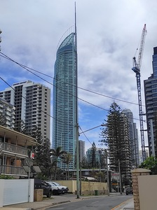
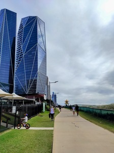
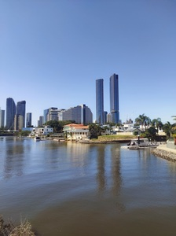
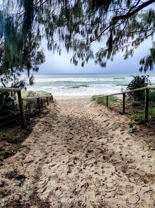

Entre Rascacielos y Olas: Un Amanecer en Broadbeach
Entre Rascacielos y Olas: Un Amanecer en Broadbeach
"De un lado, el perfil imposible de la mano humana; del otro, la infinita presencia del Pacífico. Gold Coast es precisamente eso: el punto exacto donde la ambición humana se encuentra con la inmensidad natural."
El despertar de Gold Coast
La mañana australiana despliega todo su esplendor muy temprano, con ese sol característico de Queensland que parece más brillante que en cualquier otro lugar del planeta. Dar un paseo por el sendero costero, por esa franja casi perfecta que separa la civilización del océano, con el objetivo de alcanzar la emblemática Torre Q1, ese gigante que vigila la costa desde sus 322 metros de altura es obligado.
Broadbeach (o "Broadie", como la llaman cariñosamente los locales) despertaba con esa mezcla perfecta entre tranquilidad residencial y bullicio turístico. A esta hora, los madrugadores ya ocupaban sus posiciones en la arena, mientras los surfistas más experimentados aprovechaban ybuscan las condiciones perfectas antes de que la brisa cambiara a mediodía.
|  |  |
|---|---|
|  |  |
El sendero de los contrastes
El paseo costero (Oceanway) es quizás una de las mejores infraestructuras que Gold Coast ofrece a residentes y visitantes. Un camino perfectamente pavimentado que serpentea siguiendo la línea de costa por más de 36 kilómetros, desde The Spit hasta Coolangatta. Un tramo especial siempre ha sido el que conecta Broadbeach con Surfers Paradise, donde se encuentra la Q1.
Con cada paso, el paisaje se transforma. A la derecha, el Pacífico desplegaba su inmensidad azul. Las olas rompían con una cadencia hipnótica, creando ese sonido blanco que funciona como banda sonora perfecta para cualquier reflexión profunda. Grupos de pelícanos sobrevolaban la costa, realizando ocasionales inmersiones en busca del desayuno.
A la izquierda, la evolución arquitectónica de Gold Coast contaba su propia historia. Edificios cada vez más altos, cada vez más ambiciosos, cada uno tratando de superar al anterior. Una competencia vertical que ha dado a esta costa australiana su característica silueta. Desde los apartamentos más modestos de Broadbeach hasta los lujosos rascacielos de Surfers Paradise, el horizonte urbano es un testimonio del desarrollo explosivo que ha experimentado esta región desde los años 70.
"Gold Coast es una ciudad que parece estar siempre mirando hacia arriba, tanto en sus aspiraciones como en su arquitectura."
El reino de los rascacielos
Conforme el sendero continua hacia el norte, la densidad de edificios se intensificaba. Los complejos residenciales se apretaban unos contra otros, todos compitiendo por ofrecer las mejores vistas al océano. Entre ellos destacan:
- Oracle Towers: Con sus dos torres gemelas y su distintivo diseño contemporáneo
- The Wave: Reconocible por su fachada ondulada que imita el movimiento del océano
- Soul: Un gigante de 77 pisos que domina el panorama de Surfers Paradise
- Jewel Residences: Con su diseño cristalino que refleja la luz como verdaderas joyas
Y por supuesto, dominándolos a todos, la Torre Q1. Su aguja característica aparecía y desaparecía entre los edificios conforme avanzaba por el sendero, como un faro urbano guiando mi camino.
El gigante de concreto y cristal
La Q1 (Queensland Number One) emergió finalmente en todo su esplendor. Completada en 2005, fue por un tiempo el edificio residencial más alto del hemisferio sur y sigue siendo uno de los íconos indiscutibles de Gold Coast. Su diseño, inspirado en la antorcha olímpica de Sydney y la Ópera de Sydney, representa perfectamente esa ambición australiana de combinar funcionalidad con belleza.
Al llegar a sus pies, uno no puede evitar sentir ese vértigo reverencial que producen las grandes obras humanas. La torre se eleva como un desafío a la gravedad, con sus 78 pisos residenciales y su característica aguja que parece querer alcanzar las nubes.
Desde la base de la Q1, el contraste es aún más dramático. Girando 180 grados, se puede contemplar la totalidad del skyline de Gold Coast extendiéndose hacia el sur: una línea dentada de hormigón, vidrio y ambición humana. Y al volver la vista hacia el este, ahí está, imperturbable y eterno, el Océano Pacífico, recordándonos lo pequeños que somos a pesar de nuestras grandes construcciones.
Entre dos mundos
Lo fascinante de este paseo es precisamente esa dualidad. Por un lado, la vitalidad urbana: restaurantes preparándose para el almuerzo, turistas madrugadores haciendo cola para subir al mirador SkyPoint de la Q1, residentes locales paseando a sus perros, corredores aprovechando la fresca brisa marina. Por otro lado, la constancia natural: el océano, indiferente a nuestra presencia, continuando su eterno ciclo de mareas.
En ese punto exacto, donde la acera termina y comienza la arena, existe una frontera invisible entre dos mundos. Uno construido meticulosamente por el ser humano durante las últimas décadas, y otro que ha existido durante millones de años. Es en esa frontera donde Gold Coast cobra su verdadero significado: la "Costa Dorada", donde la luz del sol australiano baña por igual los rascacielos y las olas, unificando ambos mundos en un paisaje único.
Reflexiones finales bajo el sol de Queensland
Gold Coast ha conseguido mantener una relación respetuosa entre desarrollo urbano y preservación natural. Las playas siguen siendo accesibles, limpias y vivas. La fauna marina y costera coexiste con millones de visitantes anuales.
Quizás sea esa la verdadera magia de un paseo matutino por el sendero costero: experimentar en primera persona cómo el ingenio humano y la fuerza natural pueden, ocasionalmente, encontrar un equilibrio armónico. Un recordatorio de que nuestras mejores creaciones son aquellas que se integran en el entorno, en lugar de dominarlo.
Si alguna vez visitas Queensland, te recomiendo encarecidamente que te reserves una mañana para este paseo. No importa si eres amante de la arquitectura moderna o de los paisajes naturales - aquí encontrarás ambos en su máxima expresión, separados apenas por unos metros de asfalto y arena dorada.
"La verdadera riqueza de Gold Coast no está en sus edificios de lujo ni en sus playas de postal, sino en ese pequeño sendero que permite experimentar ambos mundos en un solo paseo."
Datos prácticos para el viajero con Emacs
Para los amantes de Emacs que visiten la zona, aquí van algunos datos útiles que pueden organizar en su org-mode favorito:
* Gold Coast - Datos prácticos ** Mejor época para visitar - Primavera (septiembre-noviembre): Temperaturas moderadas, menos lluvia - Otoño (marzo-mayo): Mar cálido, menos turistas ** Ruta del paseo Broadbeach-Q1 - Distancia: ~3.5 km (ida) - Duración aproximada: 40-50 minutos a paso tranquilo - Puntos de interés: Kurrawa Park, Broadbeach Mall, Oracle Boulevard, Surfers Paradise Beach, Q1 ** Accesos a la playa - Cada 200-300 metros hay accesos señalizados - Duchas y fuentes de agua cada 500 metros aproximadamente ** Mirador SkyPoint (Q1) - Horario: 9:00-21:00 (consultar en temporada alta) - Precio: - Recomendación: Ir temprano para evitar colas
Emacs Tip: Diario de viaje con Org-mode
Una de las grandes ventajas de usar Emacs durante tus viajes es poder mantener un diario organizado con Org-mode. Aquí hay una pequeña configuración que uso personalmente para mis diarios de viaje:
;; Configuración para diario de viajes con org-mode (use-package org :config (setq org-directory "~/org") (setq org-travel-directory (concat org-directory "/travel")) ;; Plantilla para entradas de viaje (add-to-list 'org-capture-templates '("t" "Travel Log" entry (file+olp+datetree "travel.org" "Travel Journal") "* %^{Location} %^g\n%?\n:PROPERTIES:\n:LOCATION: %\\1\n:WEATHER: %^{Weather}\n:MOOD: %^{Mood}\n:END:\n%t\n\n" :empty-lines 1)) ;; Función para insertar coordenadas GPS (requiere conexión) (defun org-travel-insert-gps () (interactive) (when (executable-find "curl") (let* ((gps-data (shell-command-to-string "curl -s https://ipinfo.io/loc")) (coords (split-string gps-data "\n"))) (insert (format "GPS: %s\n" (car coords)))))) )
Con esta configuración, podrás capturar rápidamente tus experiencias durante el viaje con `C-c c t`, y organizar automáticamente tus entradas por fecha y ubicación.
¡Buen viaje y buen Emacsing!